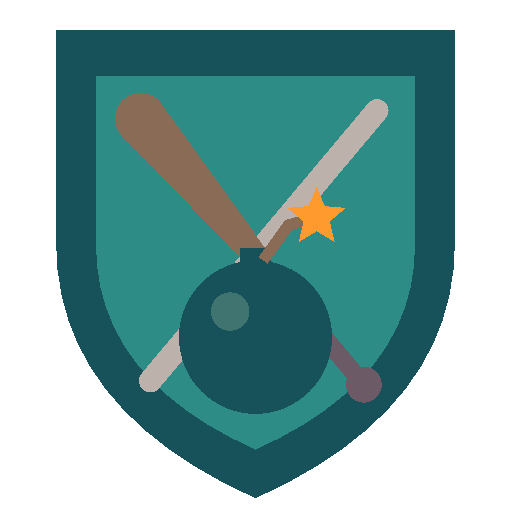

A. 로그인 톤 (추천) — 안개 낀 하늘색 배경 + 노란 진행 바. 로딩이 끝나면 같은 톤의 로그인 화면으로 끊김 없이 이어짐
B. 깊은 숲 — 진한 청록 배경 + 풀색 바. 대비가 강해 로고가 또렷함. 로그인 화면(밝은 톤)으로 넘어갈 때 밝기 차가 큼
C. 미니멀 — 크림 배경, 진행 바 없이 크레스트가 아래부터 색으로 차오름. 가장 깔끔하지만 진행률 읽기는 덜 직관적